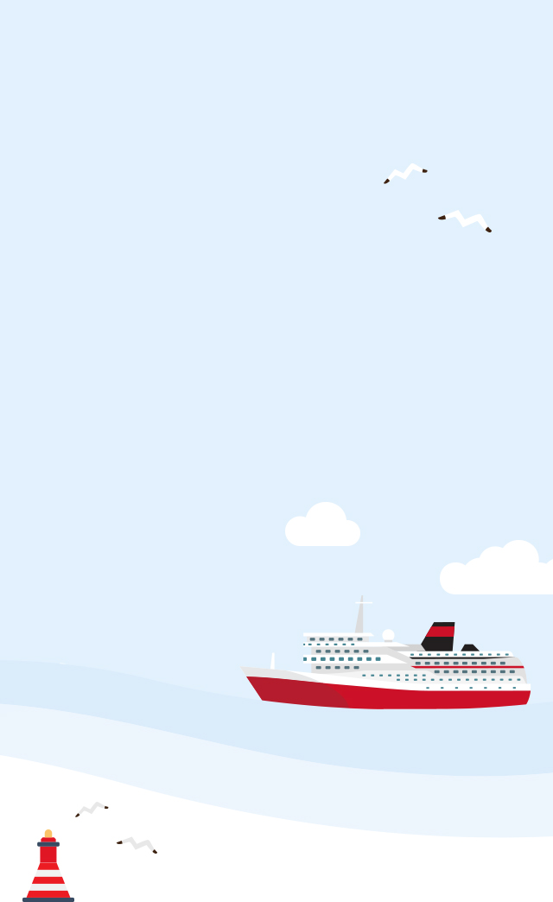
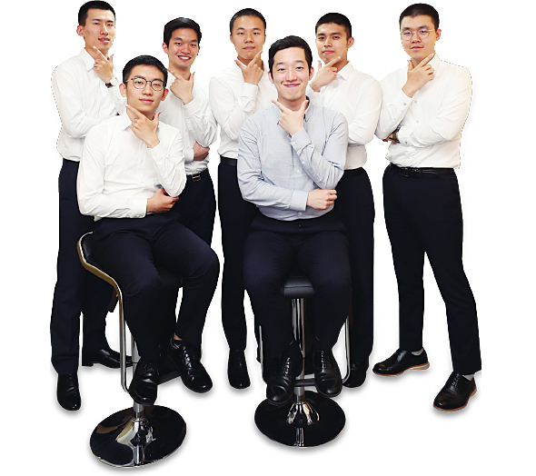

와 제 롤모델이 잡스에요!!! 아이폰 첫 출시되고 나서부터 계속 아이폰 쓰고 있는데 잡스가 너무 그리워요ㅠㅠ 지금은 돈만 벌려고 하는 것 같아서 디자인 발전도 없고ㅠㅠ와 제 롤모델이 잡스에요!!! 아이폰 첫 출시되고 나서부터 계속 아이폰 쓰고 있는데 잡스가 너무 그리워요ㅠㅠ 지금은 돈만 벌려고 하는 것 같아서 디자인 발전도 없고ㅠㅠ와 제 롤모델이 잡스에요!!! 아이폰 첫 출시되고 나서부터 계속 아이폰 쓰고 있는데 잡스가 너무 그리워요ㅠㅠ 지금은 돈만 벌려고 하는 것 같아서 디자인 발전도 없고ㅠㅠ와 제 롤모델이 잡스에요!!! 아이폰 첫 출시되고 나서부터 계속 아이폰 쓰고 있는데 잡스가 너무 그리워요ㅠㅠ 지금은 돈만 벌려고 하는 것 같아서 디자인 발전도 없고ㅠㅠ와 제 롤모델이 잡스에요!!! 아이폰 첫 출시되고 나서부터 계속 아이폰 쓰고 있는데 잡스가 너무 그리워요ㅠㅠ 지금은 돈만 벌려고 하는 것 같아서 디자인 발전도 없고ㅠㅠ
NEW In HMM
현대상선의 새로운 가족
2018년도
초임사관을 만나다
초임사관을 만나다
2018년도 초임사관들이 부푼 꿈을 안고 현대상선에 입사했다.
올해 초 치열한 입사 경쟁을 뚫고 현대상선의 초임사관으로 첫발을 디딘 이들은 우수한 학업 성적은 물론,
해운업계를 향한 끝없는 열정을 두루 갖춘 현대상선의 새로운 경쟁력으로 기대를 모으고 있다.
올해 초 치열한 입사 경쟁을 뚫고 현대상선의 초임사관으로 첫발을 디딘 이들은 우수한 학업 성적은 물론,
해운업계를 향한 끝없는 열정을 두루 갖춘 현대상선의 새로운 경쟁력으로 기대를 모으고 있다.
NEW In HMM

현대상선의 새로운 가족
2018년도
초임사관을 만나다
초임사관을 만나다
2018년도 초임사관들이 부푼 꿈을 안고 현대상선에
입사했다. 올해 초 치열한 입사 경쟁을 뚫고
현대상선의 초임사관으로 첫발을 디딘 이들은
우수한 학업 성적은 물론, 해운업계를 향한 끝없는
열정을 두루 갖춘 현대상선의 새로운 경쟁력으로
기대를 모으고 있다.
입사했다. 올해 초 치열한 입사 경쟁을 뚫고
현대상선의 초임사관으로 첫발을 디딘 이들은
우수한 학업 성적은 물론, 해운업계를 향한 끝없는
열정을 두루 갖춘 현대상선의 새로운 경쟁력으로
기대를 모으고 있다.
지난 5월 3일에는 부산광역시 초량동의 현대상선 트레이닝센터에서 50여 명의 초임사관을 대상으로 ‘2018년 초임사관 입사 오리엔테이션’이 열렸다. 회사소개, 초청강연, 환영만찬 등으로 구성된 이번 오리엔테이션에서 무엇보다 가장 큰 주목을 받았던 순서는 단연 유창근 사장의 ‘CEO 특강’이었다. 유 사장은 CEO 특강에서 현대상선의 역사, 중장기 전략, 환경규제 이슈, 해운업 동향 등을 설명하고, 현대상선의 톱클래스 도약을 약속했다. 새로운 열정과 활력으로 현대상선에 에너지를 전해줄 것으로 기대를 모으고 있는 2018년 초임사관들. 입사 오리엔테이션을 마친 52명의 초임사관들에게 입사 후 목표와 가장 기대되는 일은 무엇인지 물었다.
글·사진
편집실
CEO 특강 하이라이트 영상
윗줄김신후, 고승현, 김상헌, 강원일, 김선학
아래줄김민석, 강동현, 김대준
김신후 어떤 환경에서도 자기계발을 멈추지 않을 것이며, 현대상선이 글로벌 톱 클래스로 도약하는데 한몫하고 싶습니다. 고승현 많이 배우고 선박에 잘 적응하여 언제, 어디에서, 어떤 상황에서든 필요한 인재가 되고 싶습니다. 김상헌 제가 맡은 분야에서 최고가 되어 이 분야만큼은 어떤 일이든
저를 필요로 하는 사람이 되겠습니다. 김선학 지난 5주간 받았던 교육을 실제 선박 업무에 적용해보고 직접 느끼고 싶습니다. 강원일 입사 동기 중 가장 먼저 승선을 하는 만큼 더욱 책임감을 갖고 배워 나가겠습니다. 현대상선에서 성장해나갈 제 자신이 정말 기대됩니다.
김민석 빠른 시일 내에 업무를 완수할 수 있도록 항상 낮은 자세로 배워나갈 것입니다. 강동현 제가 없이 현대상선이 돌아가지 못한다는 일념으로 모든 업무를 숙달하여 능숙히 해내는 뛰어난 항해사가 될 것입니다. 김대준 목적지까지 안전하게 운항해서 첫 승선을 무사히 마치고 싶습니다.
윗줄김신후, 고승현, 김상헌, 강원일, 김선학
아래줄김민석, 강동현, 김대준
김진섭, 양윤철, 박신후, 송현승, 양혁인, 유영걸, 설진우, 김태송
김진섭 현대상선에 실습생이 아닌 실제 3항사로서 책임감을 가지고 맡은 업무에 대한 전문성을 키워나가는 사관이 되겠습니다. 양윤철 어릴 적부터 이어온 선장이 되겠다는 부푼 꿈을 안고 현대상선에 입사하였습니다. 나가 모두에게 인정 받을 수 있는 사람이 되겠습니다. 박신후 현대상선이 명성을 되찾는데 주춧돌 역할을 톡톡히 해내고 싶습니다. 송현승 선배님들 사이에서 ‘일 잘하는 3항사’로 알려지는 것이 제 목표입니다. 언제나 본질에 충실하며 조금씩 앞으로 나아가겠습니다. 양혁인 선배님들에게 인정받고, 나중에 생길 후배들에게도 귀감이 되는 항해사가 되겠습니다. 유영걸 사회에 첫발을 내딛는 지금, 실습 때 알지 못했던 것들을 배우고 그 지식을 갖고 제가 직접 운항을 할 생각을 하니 벌써부터 가슴 벅찹니다. 설진우 제 자신을 내려놓고 배움에 정진할 수 있는 설진우가 되겠습니다. 많은 선배님들에게 인정받을 수 있도록 최선을 다하겠습니다. 김태송 처음이라 많이 서툴겠지만, 낙담하지 않고 더 열심히 배우겠습니다.
윗줄장하림, 이진호, 우현호, 김서준, 유재혁
아래줄김명휘, 정준영, 원준태
장하림 매력적인 구릿빛 피부를 갖고 있는 장하림입니다. 어떤 일을 하든 그 분야의 최고가 되자는 것이 제 삶의 모토입니다. 이진호 처음으로 승선을 시작하는 만큼 모든 초임사관들이 무사히 승선을 잘 마쳤으면 좋겠습니다. 우현호 늘 최선을 다해 회사에 기여하며 함께 성장해나갈 수 있는
3항사가 될 수 있도록 최선을 다해 노력하겠습니다. 김서준 경쟁하여 최고가 되기 보다는 다른 구성원들과 소통해 지식을 공유할 수 있는 인재가 되고 싶습니다. 유재혁 박학다식하면서도 유머러스한 시니어 사관이 되는 것이 목표입니다. 김명휘 앞으로 들어올 후임들에게 ‘그 선배님이 잘
가르쳐주시고 실력 있는 분이야’라는 이야기를 들을 수 있도록 실전에서 많이 배우겠습니다. 정준영 실패나 도전을 겁내지 않는 현대상선의 ‘Hero’가 되겠습니다. 선박 운항의 최전선에서 근무하는 항해사로서 수익 창출에 기여하는 일원이 되고 싶습니다.
원준태 어떤 경우에도 안전이 최우선이라고 생각하는 만큼 안전에 더욱 만전을 기하겠습니다. 첫 항해가 너무나 기다려집니다.
윗줄장하림, 이진호, 우현호, 김서준, 유재혁
아래줄김명휘, 정준영, 원준태
윗줄추선호, 정재엽, 황대현, 조우연, 허재민
아래줄황현복, 홍성목, 정현우
추선호 함께 승선하는 분들 모두 안전하게 한 항차를 마칠 수 있도록 안전에 더욱 더 신경 쓰겠습니다. 정재엽 항해사관으로서 인정 받고 스스로도 자부심을 가질 수 있는 행복한 인재가 되고 싶습니다. 황대현 현대상선에서 그 누구보다
성실하고 배려심 많고 리더십 있는 항해사가 되고 싶습니다. 조우연 현대상선에서 최고의 1항사, 최고의 선장이라는 타이틀을 달 수 있을 때까지 노력하겠습니다. 허재민 현대상선에 입사해 좋은 일들만 생길 것 같은 기분입니다. 황현복
어떤 선박에 가든 ‘황현복 항해사는 든든하다’는 말을 들을 수 있도록 능력을 갖춘 일원이 되고 싶습니다. 홍성목 언제나 인정 받을 수 있도록 한발 앞서가는 홍성목이 되겠습니다. 정현우 ‘새로 온 3항사가 일을 열심히 한다’는 말이 나올 수 있도록 최선을 다하겠습니다.
윗줄추선호, 정재엽, 황대현, 조우연, 허재민
아래줄황현복, 홍성목, 정현우
윗줄김경태, 김동욱, 고용필, 김광진
아래줄강성일, 박민우, 김준우
김경태 모든 분야에서 부족함이 없는 사람이 되기 보다는 책임을 다하고 모범이 될 수 있는 그런 사람이 되겠습니다. 김동욱 현장에서 언제나 최선을 다하시는 선배님들과 많이 대화하면서 저도 하루빨리 현상인으로서 회사에 기여하고 싶습니다.
고용필 앞으로 만나게 될 선배님들과 좋은 관계를 만들었으면 좋겠고, 선배님들께 직무 지식과 노하우 등을 많이 배우겠습니다. 김광진 힘들고 어려운 일이 반드시 있을 거라 생각합니다. 그런 상황이 오더라도 당당히 이겨내어 주어진 역할 그 이상을 해내겠습니다.
강성일 파인애플과 같은 사람 강성일입니다. 곧 선배님들의 도움 없이 항해를 할 수 있게 될 텐데 정말 많이 기대 됩니다. 박민우 최강 ‘현대상선’에서 최강 ‘박민우’가 되는 것이 목표입니다. 김준우 기관사관으로서 기술적인 면에서 유능하게 대처할 수 있는 사관이 되겠습니다.
윗줄김경태, 김동욱, 고용필, 김광진
아래줄강성일, 박민우, 김준우

윗줄신정익, 박현욱, 송두환, 손지호, 소승찬
아래줄사공병인, 백명기
신정익 누구든 함께 일하고 싶은 3기사가 되는것이 제 목표입니다. 더 노력하는 모습으로 부족함을 채워 나가겠습니다. 박현욱 비교적 늦은 나이(27살)에 입사했지만, 어느 상황에서도 임무를 빠르게 수행할 수 있도록 발로 뛰겠습니다. 송두환 함께 일하는 동료들이 신뢰할 수 있는 3기사가 되겠습니다.
앞으로 많은 문제를 맞닥뜨리고, 이를 통해 성장해나갈 제 자신이 기대됩니다. 손지호 실기사 때 해보지 못했던 일들을 할 수 있게 되어 승선이 더 기다려집니다. 어디서든 잘 융화되는 시니어 사관이 되고 싶습니다. 소승찬 수동적으로 움직이지 않고 능동적으로 직무를 수행해나갈 수 있을 때 가장 큰 보람을 느낄 것 같습니다.
사공병인 승선 후 많은 선배님들께 배우게 될 텐데 그 시간이 너무나 기대됩니다. 아직 부족한 점이 많지만 늘 긍정적인 자세로 열심히 배워나가겠습니다. 백명기 뿌리가 튼튼하지 않은 나무는 비바람에 쉽게 쓰러지게 돼 있습니다. 기초를 튼튼하게 다져 승선 생활에서 제 역할을 다 해내겠습니다.
윗줄신정익, 박현욱, 송두환, 손지호, 소승찬
아래줄사공병인, 백명기
정성윤, 한영빈, 정수홍, 이준혁, 윤정웅, 이은혁
정성윤 안전하게 승선하고, 선배님들께 많이 배워 유능한 엔지니어가 되겠습니다. 첫 월급날이 가장 기다려집니다.(하하) 한영빈 제 역할을 톡톡히 해내는 기관사가 되고 싶습니다. 제 손으로 직접 선박 기기를 만져 문제를 해결했을 때 굉장히 보람될 것 같습니다.
정수홍 유능한 엔지니어가 되기 위한 첫걸음을 내딛었다고 생각합니다. 한국 해운을 이끌어간다는 자부심을 가슴에 새기겠습니다. 이준혁 곧 승선을 앞두고 있는데 승선 생활에 잘 적응하고, 담당 기기도 잘 마스터하여 선박에서 꼭 필요한 사람이 되고 싶습니다.
윤정웅 승선하여 큰 실수를 하지 않을까 걱정이 앞서지만, 한편으로 문제를 해결해 나가는 과정이 기대 됩니다. 이은혁 어떠한 경우라도 안전을 최우선으로 생각하겠습니다. 하루 빨리 담당 기기를 마스터하여 일을 혼자서도 해내면 좋겠습니다.
정성윤, 한영빈, 정수홍, 이준혁, 윤정웅, 이은혁
-
최고예요
322
-
좋아요
322
-
슬퍼요
322
-
그저 그래요
322
-
화나요
322